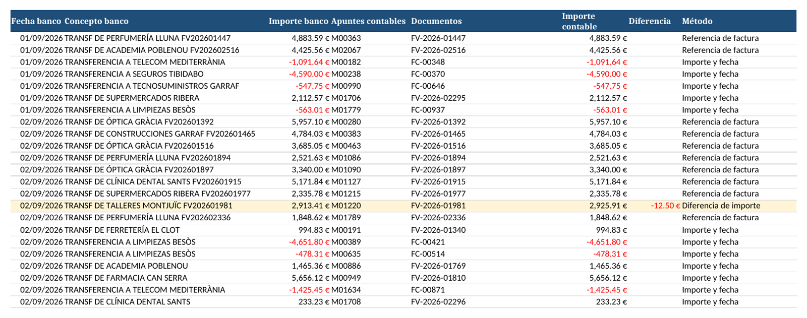
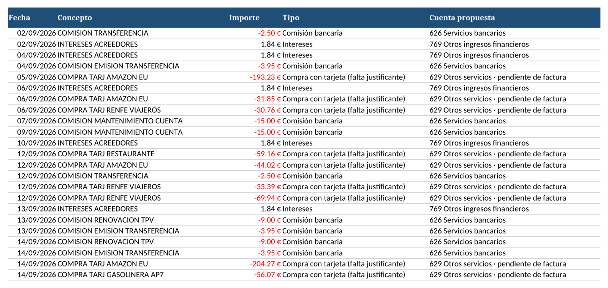
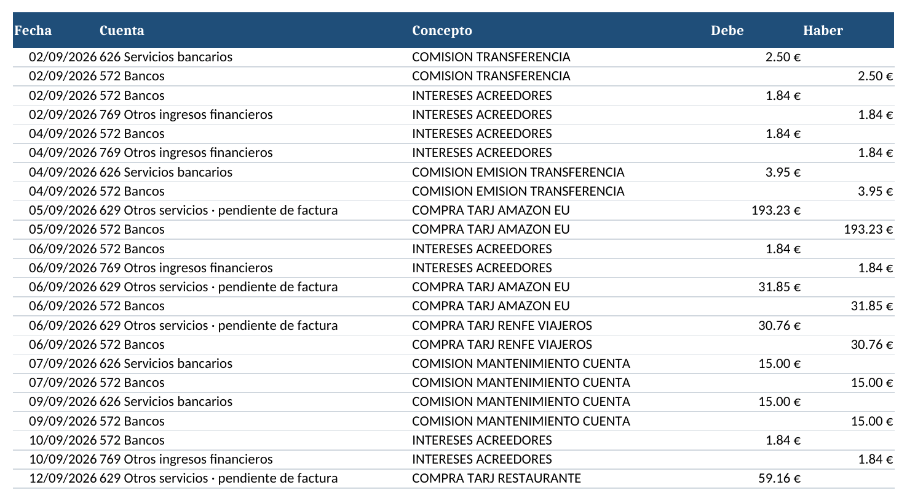

02
The Excel file




At month end, the bank statement and the books never say the same thing. This program matches 2,000 transactions against 2,070 ledger entries in under a second and leaves the balance difference explained to the cent.
You give it the bank statement export and the ledger for the bank account (572 in the Spanish chart of accounts). Finding the transactions that match exactly is the easy part; what takes hours is everything else:
In the end, the €68,062.88 difference between the two balances is justified item by item, and every open item comes with a proposed journal entry.



Four passes, from the safest to the least safe:
If the bank description quotes the invoice (TRANSF DE ÓPTICA GRÀCIA FV202601599), it's matched to that invoice directly, even if the amount isn't exactly the same.
Same amount and a value date between 0 and 5 days after the ledger entry. On a tie, the name similarity decides (even if the bank truncated it), and then the closest date.
For every unmatched transfer, it searches for the combination of 2 to 5 invoices from the same customer that adds up to exactly that amount.
Same customer and dates, but a small difference in the amount: it's matched and the difference is flagged for review.
Bank balance − unbooked transactions + payments in transit − short payments = book balance. If it isn't exactly €0.00, something slipped through.
All amounts are handled as whole cents so that the sum of 2,000 transactions balances exactly, with no rounding errors.
Value dates that don't match the books, decimal commas, semicolon separators and truncated descriptions.
The tests check that all 2,000 transactions end up exactly where they should and that none is used twice.
Doubtful items aren't forced: fees, card purchases and differences are kept apart, with the proposed account and entry so someone can approve them.